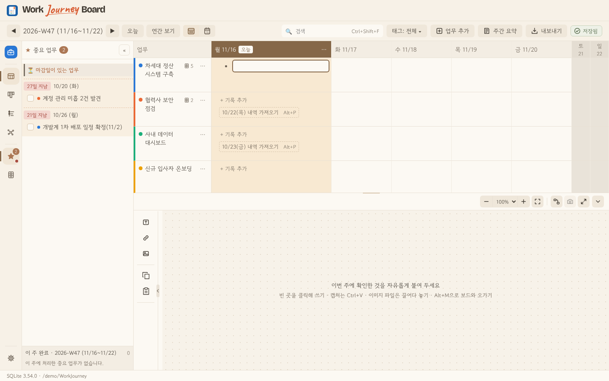
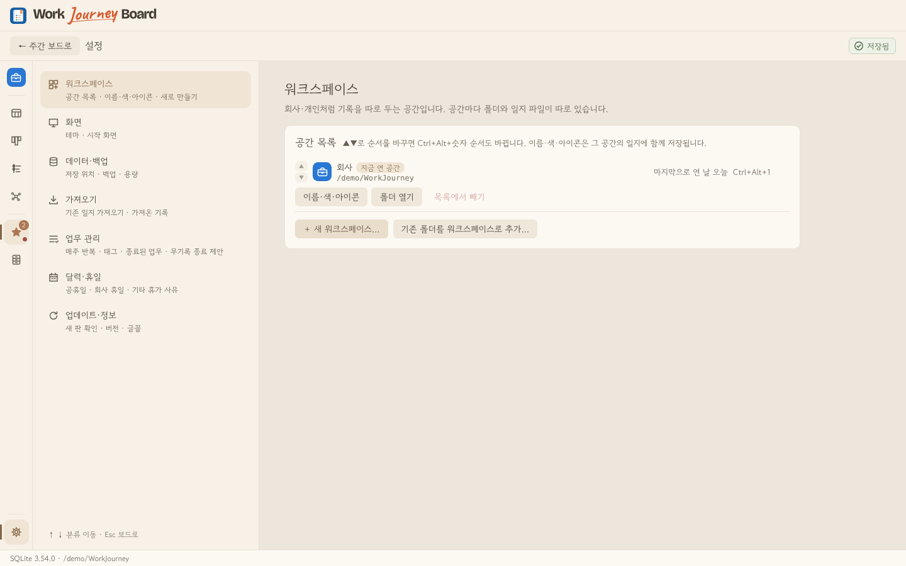

S1 · 레일 공간 메뉴 — 이 PC(오프라인 전용)와 온라인 공간을 한 목록에, 유형 배지 + 상태 점

← 이 기기에 없음: 누르면 받아서 열기
S2 · 상단 상태 — 기존 "저장됨" 알약 자리에 온라인 상태를 함께(오프라인 전용 공간은 지금 그대로)
동기화됨 · 10:32
알약 상태(온라인 공간)
동기화됨 · 10:32
동기화 중…
저장됨 · 대기 3
연결 끊김 · 대기 3
충돌 1
다시 로그인
오프라인 전용 공간(그대로)
저장됨
S3 · 알약을 누르면 동기화 패널 — 이 기기 저장 / 서버 동기화를 나눠 표시, 지금 동기화·충돌 보기
충돌 1
이 기기저장됨
서버동기화됨 · 10:32
보낼 변경0건
충돌1건
충돌 보기지금 동기화
설정 › 계정
S4 · 설정 › 계정(새 분류) — 이메일 인증번호 로그인, 초대 전용 안내, 로그인 후 계정·이 기기·로그아웃

워크스페이스
공간 목록 · 오프라인 전용 · 온라인
달력·휴일
공휴일 · 회사 휴일 · 기타 휴가 사유
계정
온라인 계정 · 로그인 전
이메일stranger@example.com인증번호 받기
초대받은 이메일만 가입할 수 있습니다. 초대받은 주소인지 확인해 주세요.
온라인 계정 · 로그인 후
이메일virtual@example.com서버 확인됨 · 10:32
온라인 공간3개 · 이 기기에 2개
이 기기Windows · 이 PC
다시 확인로그아웃…
S5 · 설정 › 워크스페이스 — 원본(오프라인 전용)과 온라인 공간을 함께, 온라인 공간 만들기 진입
워크스페이스
공간 목록
회사오프라인 전용지금 연 공간
/demo/WorkJourney
회사온라인
동기화됨 · 10:32 · 2026-11-15 복제
+ 새 워크스페이스…온라인 워크스페이스 만들기…기존 폴더를 워크스페이스로 추가…
S6a · 온라인 워크스페이스 만들기 1/4 — 어떻게 시작할지
온라인 워크스페이스 만들기
오프라인 기록으로 시작
이 PC의 공간을 복제 · 원본은 그대로
취소다음
S6b · 3/4 확인 — 원본은 그대로 · 새 온라인 공간 · 올라갈 양
온라인 워크스페이스 만들기
새 공간온라인
회사
virtual@example.com
업무·기록업무 12 · 기록 2,540행
그림38개 · 12.4MB
이 기기 경로폴더 경로는 올리지 않음
이전올리기 시작
S6c · 4/4 올리기 — 단계·진행, 잠시 멈추기·이어서(끊겨도 이어서), 완료 → 열기
온라인 워크스페이스 만들기
그림 올리는 중 · 21/38
7.6MB / 12.4MB
잠시 멈추기취소…
완료되면
온라인 공간을 만들었습니다온라인 워크스페이스 열기닫기
S7 · 충돌 — 설정과 같은 전체 화면, 항목마다 이 기기 / 서버 나란히 · 세 가지 고르기
← 주간 보드로충돌 2건
온라인회사 · 다른 기록은 계속 동기화 중
업무 기록 · 차세대 정산 시스템 구축 · 11/16서버 판 3 · 10:28 다른 기기
이 기기
정산 모듈 API 설계 검토 — 결제 연동 부분 수정
이 기기 것으로서버 것으로둘 다 보존
주간 메모 · 2026-W47서버 판 5 · 10:30 다른 기기
이 기기상자 6개
회의 정리 / 다음 주 일정 / 리스크 메모 …
서버상자 5개
회의 정리 / 다음 주 일정 / 고객 요청 …
이 기기 것으로서버 것으로둘 다 보존(상자 합치기)
S8 · 로그아웃·다른 계정 — 열린 온라인 공간을 저장 후 닫고 오프라인 전용 공간으로, 목록은 즉시 그 계정 것만
로그아웃할까요?
지금 연 회사 · 온라인을 저장하고 닫은 뒤 회사 · 오프라인 전용으로 돌아갑니다.
보낼 변경3건 — 로그아웃 전에 보냄
이 기기 사본그대로(다음 로그인 때 이어서)
취소보내고 로그아웃